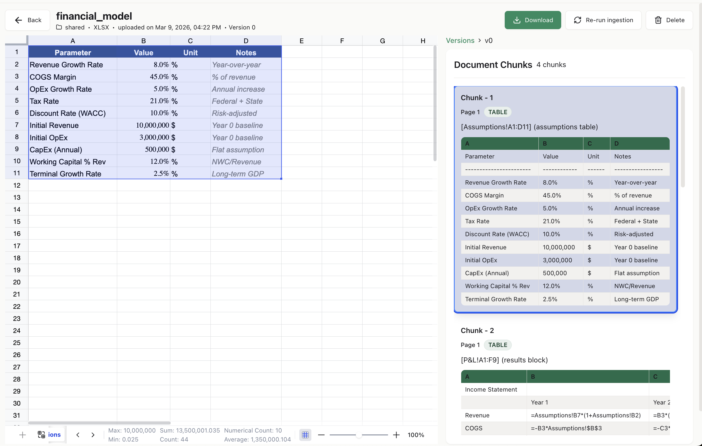

The missing ETL step between your spreadsheets and your LLM.
Turn .xlsx into structured, typed, citation-ready JSON —
cells, formulas, merges, tables, charts, dependency graphs, and token-counted chunks.
$ pip install ks-xlsx-parser

financial_model.xlsx) → parser output on the right: 4 chunks, each tied back to an exact sheet!range.Most Excel libraries give you a dataframe. ks-xlsx-parser gives you a full workbook graph — every cell typed, every formula parsed, every chunk addressable back to exact source coordinates.
Values, formulas, styles, coordinates — all round-trip to JSON / DB / vector store.
Every chunk carries a file.xlsx#Sheet!A1:F18. The LLM points back at the exact cell.
Directed formula graph with upstream, downstream, and cycle detection.
HTML + pipe-text, token-counted via tiktoken, content-hashed for dedup.
Bar · line · pie · scatter · area · radar · bubble, each with a text summary.
Every Excel rule type — color scales, data bars, icon sets, formulas.
Excel ListObjects and master/slave merge relationships preserved.
No macro execution, no external links, ZIP-bomb guard, size limits.
.xlsx to LLM-ready chunks.Every ChunkDTO ships with a source URI, a token count, rendered HTML + text, a dependency summary, and a content hash. Wire it straight into a LangChain, LangGraph, CrewAI, or OpenAI-Agents tool.
from ks_xlsx_parser import parse_workbook result = parse_workbook(path="q4_forecast.xlsx") for chunk in result.chunks: print(chunk.source_uri) # q4_forecast.xlsx#Revenue!A1:F18 print(chunk.token_count) # 412 print(chunk.render_text[:200]) # pipe-delimited, LLM-friendly print(chunk.render_html[:200]) # HTML with proper colspan/rowspan
source_uri — cite back to exact cellsrender_text / render_html — LLM-consumable bodiestoken_count — keep context-window math honestdependency_summary — upstream / downstream formulascontent_hash — xxhash64 dedup across versionsblock_type — HEADER · DATA · TABLE · CHART_ANCHOR · …testBench ships with the repo and runs in CI. One-feature-per-file matrix, randomised density cocktails, and engineered adversarial files — unicode bombs, circular refs, sparse 1M-row sheets, 250-sheet workbooks.
| Capability | pandas / openpyxl | Docling | ks-xlsx-parser |
|---|---|---|---|
| Reads values | ✓ | ✓ | ✓ |
| Parses formulas with dependency graph | raw string | ✗ | ✓ |
| Preserves merges (master/slave) | coords only | partial | ✓ |
| Extracts charts (bar/line/pie/…) | ✗ | ✗ | ✓ |
| Conditional formatting rules | ✗ | ✗ | ✓ |
| Multi-table sheet layout | ✗ | partial | ✓ |
| Citation URI per chunk | ✗ | partial | ✓ |
| Token count per chunk | ✗ | ✗ | ✓ |
| Deterministic content hashes | ✗ | ✗ | ✓ |
Every framework gets the same output: chunks with a source_uri, token_count, rendered HTML + text, and a dependency summary. Wire it in once; cite cells forever.
Wrap parse_workbook() as a @tool; return chunk.render_text with the source_uri in metadata so the agent cites exact cells.
Use a ToolNode that calls parse_workbook() once per uploaded workbook and passes the chunks as state between graph nodes.
Give each crew member a load_spreadsheet(path) tool. Analysts get the cells, writers get the rendered chunks with tokens capped.
Register parse_workbook as a @function_tool; pass the resulting chunks as the answer to the load_spreadsheet action.
Run xlsx-parser-api and call POST /parse. Any MCP-aware client can now read Excel files with citations.
result.serializer.to_vector_store_entries() emits id + text + metadata triples ready to upsert. Each entry has a content hash for dedup.
Answers to the questions developers actually type into Google and ChatGPT.
ks-xlsx-parser is the purpose-built option. Unlike pandas or openpyxl, it preserves formulas with a directed dependency graph, merged regions, tables, charts, and conditional formatting — and emits token-counted chunks with source_uri citations an LLM can quote. pip install ks-xlsx-parser.
Call parse_workbook(path=...), then expose the resulting .chunks as a LangChain @tool or a LangGraph ToolNode. Each chunk carries source_uri, render_text, token_count, and dependency_summary — everything an agent needs to cite and reason.
Same pattern: wrap parse_workbook in whatever tool abstraction your framework provides (@tool in CrewAI, @function_tool in the OpenAI Agents SDK). The parser's output is framework-agnostic.
Yes. Run the bundled FastAPI server (pip install ks-xlsx-parser[api]; xlsx-parser-api) and call POST /parse. An MCP server that wraps the parser directly is on the roadmap.
Three steps: pip install ks-xlsx-parser; call parse_workbook() on each .xlsx; call result.serializer.to_vector_store_entries() and upsert into Qdrant, pgvector, Weaviate, or Pinecone. Every entry has a deterministic content_hash for dedup and a source_uri the LLM can cite.
openpyxl and pandas give you a rectangle of values. ks-xlsx-parser gives you the full workbook graph: parsed formulas with dependency edges, merged regions, Excel ListObjects, all 7 chart types, every conditional-formatting rule type, and LLM chunks with citation URIs + token counts. It wraps openpyxl and uses lxml for the bits openpyxl loses.
No. The library reads .xlsx files; it never executes them. VBA macros are flagged but never run. External links are recorded but never resolved. ZIP-bomb and cell-count limits make it safe for untrusted uploads.
Yes — MIT licensed. Source: github.com/knowledgestack/ks-xlsx-parser. Part of the Knowledge Stack ecosystem, which also includes ks-cookbook (agent recipes).
Cells, formulas (with cross-sheet and table refs), merged regions, Excel ListObjects, all 7 chart types, conditional formatting (every rule type), data validation, named ranges, hyperlinks, comments, rich text, hidden rows/columns/sheets, freeze panes, and edge addresses up to XFD1048576. Not supported: .xls legacy, pivot-table data, sparklines, VBA execution.
The full 1054-workbook testBench round-trips in about 70 seconds. A real 21k-cell, 13-sheet financial model parses in ~4.6 s. Sparse workbooks with extreme addresses parse in under 200 ms. Details in the CHANGELOG.
ks-xlsx-parser is one piece of the Knowledge Stack ecosystem — document intelligence for agents. Focus on agents; we handle the messy parts of enterprise data.
32 production-style flagship agents + recipes for LangChain, LangGraph, CrewAI, Temporal, and the OpenAI Agents SDK.
Follow the org for upcoming parsers and MCP servers — PDF, DOCX, PPTX, HTML, and more.
Star the repo, join the Discord, and tell us what your weirdest .xlsx looks like.
ks-xlsx-parser is the open-source answer to a lot of queries developers are typing today:
Python Excel parser for LLMs, XLSX to JSON for LangChain, Excel ingestion for LangGraph,
spreadsheet reader for CrewAI, Excel tool for OpenAI Agents SDK, Excel for Claude Desktop,
Excel for Cursor, Excel MCP server, openpyxl alternative for RAG,
Excel dependency graph extractor, XLSX OOXML parser for AI,
how to parse Excel for an LLM agent, how to feed a spreadsheet to ChatGPT,
how to cite Excel cells in an LLM answer, best library to turn Excel into JSON,
Python library for parsing formulas, Excel formula dependency traversal,
document intelligence for spreadsheets, RAG over Excel files,
Excel chunker with token counts, Excel parser with citations,
how to build an agent that reads Excel, Excel to vector database pipeline,
parse .xlsx for Qdrant, parse .xlsx for pgvector, parse .xlsx for Weaviate,
parse .xlsx for Pinecone.
If any of that describes what you're trying to do: star the repo, join the Discord, or drop an issue so we know what to build next.